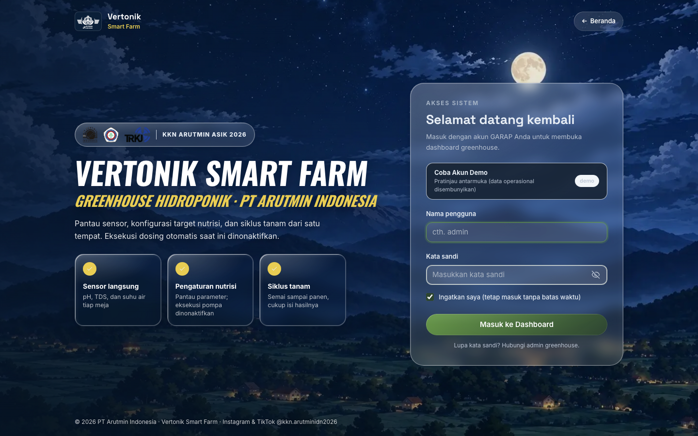
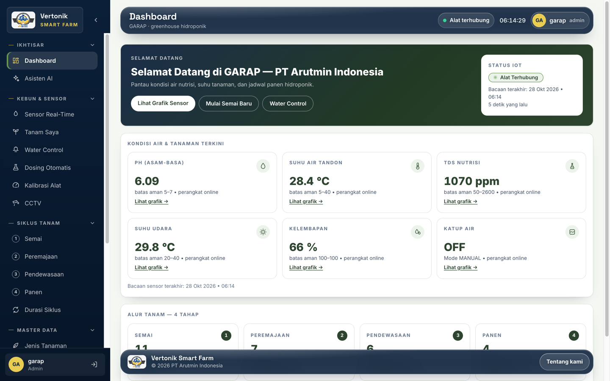
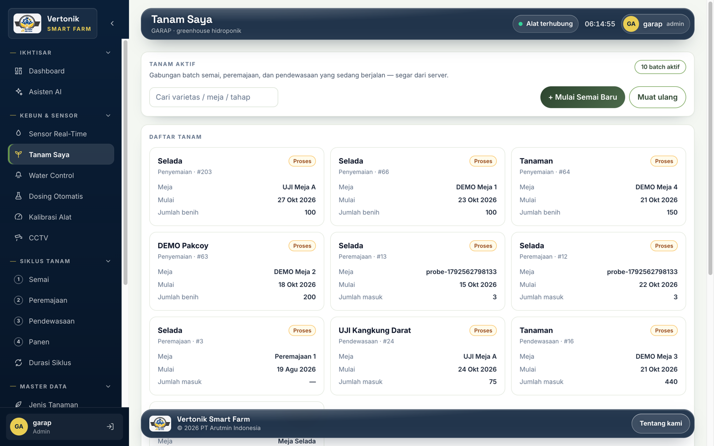

Cara Mengoperasikan Website GARAP
Delapan langkah dari login sampai memeriksa riwayat aktivitas.

Alamat website
- Wi-Fi greenhouse:
http://vertonik.localatauhttp://<IP-Pi> - Hotspot Pi
Vertoniksmartfarm:http://10.42.0.1
Tiga jenis akun
- Admin — akses penuh
- Petani — pantau & Kebun Saya
- Demo — lihat saja, tidak bisa mengubah
Delapan langkah penggunaan harian
Login
Buka alamat website, isi nama pengguna dan kata sandi.
Masuk ke DashboardBuka Dashboard
Lihat status alat (terhubung/terputus), kartu sensor dengan batas aman, dan ringkasan 4 tahap tanam.
Pilih grup menu PANTAU
Rail kiri berisi grup; submenu muncul sebagai pil di bawah: Dashboard, Sensor, Peringatan, CCTV, Asisten AI.
Lihat data sensor
Menu Sensor: grafik & tabel riwayat 6 Jam / 24 Jam / 7 Hari / Kustom, bisa diekspor CSV.
Kelola data tanaman
Menu Kebun Saya: kartu batch, estimasi panen, dan tombol Mulai semai baru.
Kelola tandon (Admin)
Meja Tanaman untuk data meja/penampung; Target Nutrisi untuk target per penampung.
Periksa Peringatan
Merah = kritis, kuning = waspada, info. Cek kondisi fisik tandon dulu sebelum Tandai selesai.
Lihat riwayat aktivitas (Admin)
Menu Catatan Aktivitas: siapa mengubah apa, kapan, dan dari rute mana.


Siapa boleh membuka apa
| Grup menu | Admin | Petani | Demo |
|---|---|---|---|
| PANTAU — Dashboard, Sensor, Peringatan, CCTV, Asisten AI | Ya | Ya | Ya |
| KENDALI — Kebun Saya | Ya | Ya | Ya (baca) |
| KENDALI — Saklar, Target Nutrisi | Ya | Tidak | Baca saja |
| DATA — Kalibrasi, Data, Catatan Aktivitas, Laporan | Ya | Tidak | Baca saja |
| SISTEM — Pengaturan Alat, Pemulihan Papan, Koneksi Alat, Manajemen User | Ya | Tidak | Baca saja |
| SIKLUS TANAM & MASTER DATA | Ya | Tidak | Baca saja |
| Akun Saya | Ya | Ya | Ya |